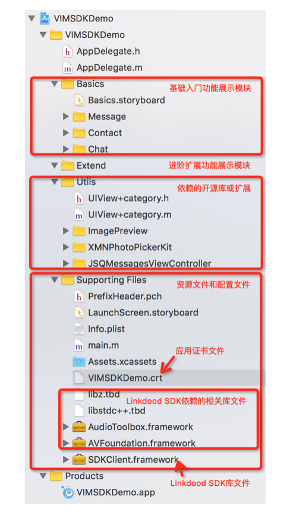
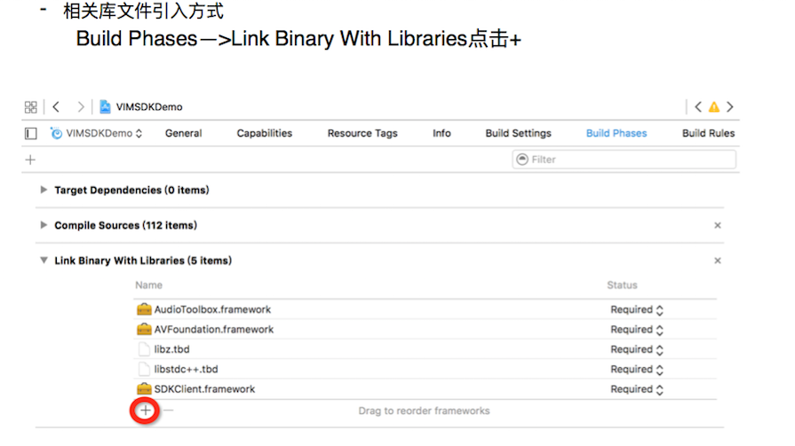
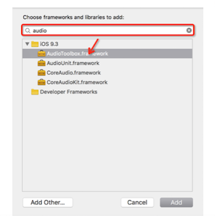
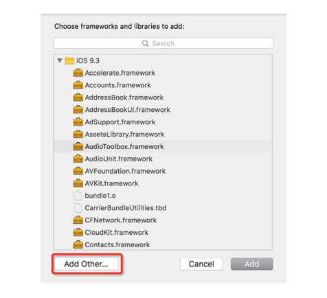
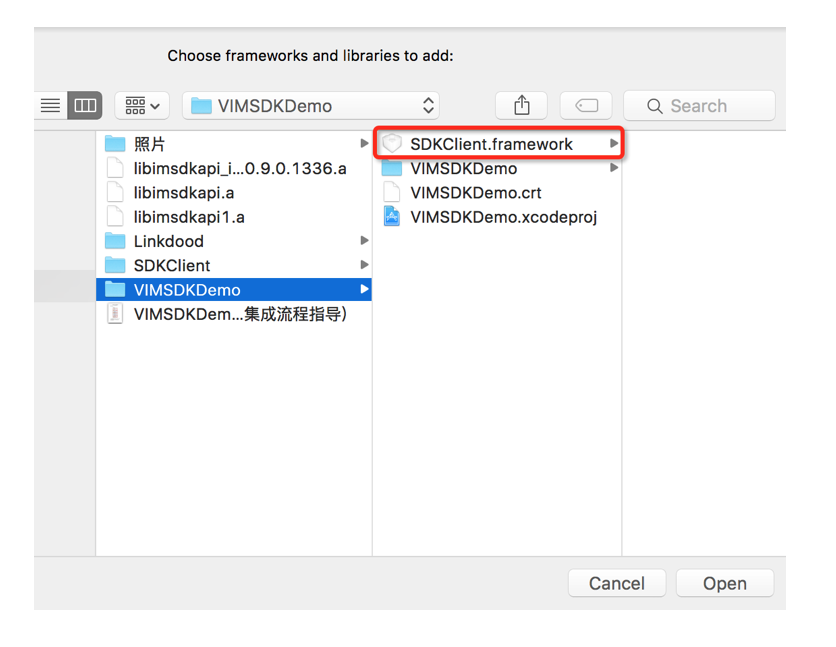
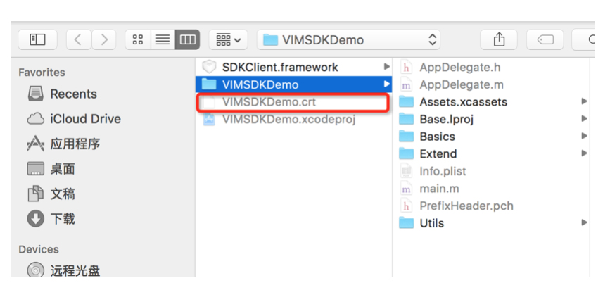
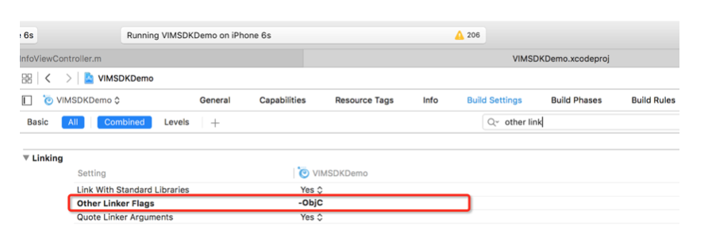
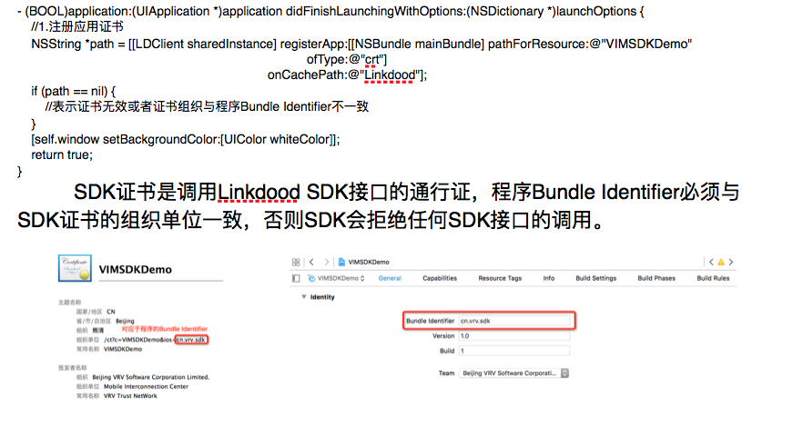

iOS客户端集成
Demo工程结构说明

如上图，是VIMSDKDemo的完整工程目录结构，我们将其分成了四个模块：
- 基础入门功能展示模块
此模块主要包括本次VIMSDKDemo版本展示的基础功能，包括最近会话、联系人列表、联系人基本信息以及会话，具体功能实现请参看此部分代码。
- 进阶扩展功能展示模块
此模块主要展示进阶扩展功能，不在此次VIMSDKDemo版本的展示范围，我们会尽快加入此模块代码。
- 依赖的第三方库或扩展
此模块主要放置了所有引用到的第三方库和扩展文件，开发者可参考。
- 资源文件和配置文件
此模块包含所有配置文件和引入的文件，其中引入的文件包括:Linkdood SDK库文件SDKClient.framework、Linkdood SDK库文件依赖的相关库文件(libz.tbd、libstdc++.tbd、AudioToolbox.framework、AVFoundation.framework)以及应用的SDK证书文件VIMSDKDemo.crt。
另外xcode6以上版本新建工程不包含预编译文件.pch文件，此处的PrefixHeader.pch文件是手动加入的，VIMSDKDemo工程中加入.pch文件是为了方便引用Linkdood SDK头文件，开发者可参考。
手动加入.pch文件方式请参考:http://www.jianshu.com/p/e6e0e3bbbf38
集成SDK的准备工作
应用证书的申请
应用证书申请地址:http://www.linkdood.cn/server-linkdood/reg
Linkdood SDK库文件的获取
从我们的开发者中心可以下载到SDK库文件、VIMSDKDemo以及相关集成文档和API文档，下载地址:http://blog.liandoudou.cn/doku.php?id=wiki:sdk
引入相关文件和依赖库
集成Linkdood SDK，我们需要引入的文件包括：
- SDKClient.framework——>Linkdood SDK库文件
- AudioToolbox.framework——>音频文件解析工具包
- AVFoundation.framework——>视频流处理工具包
- libz.tbd———————————>支持压缩的链接库
- libstdc++.tbd————————>支持c++标准库链接
- VIMSDKDemo.crt———————>应用SDK证书文件
如何引用

弹出的窗口中搜索需要添加的库文件添加

如果是添加Linkdood SDK库文件则选择弹出窗口中的Add Other按钮

然后选择我们工程文件夹中的Linkdood SDK库文件

引入应用SDK证书
- 将获取到的SDK证书拷贝到工程文件夹中，不限制目录。然后在工程目录Supporting Files下点击右键选择Add Files to ”工程名”，在弹出的窗口选择工程文件夹下的SDK证书文件。 
修改编译配置项
- 由于Linkdood SDK是静态库，而且使用了Category（类别），所以需要加入部分配置项： Build Settings—>Linking—>Other Linker Flags加入-ObjC
注:相关解释说明请参看http://blog.csdn.net/lxinl/article/details/9664807 
SDK的使用
1.引入Linkdood SDK头文件#import
2.注册应用
 3.其他相关接口的调用请参看DEMO功能实现以及相关API文档
- 请参考文档《IM基础功能(iOS)开发指南》